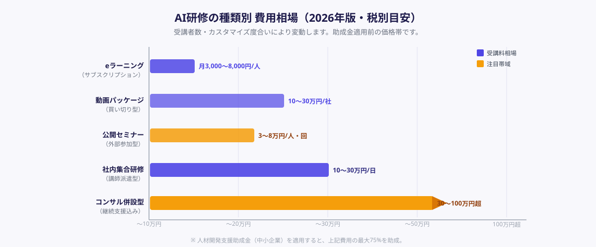
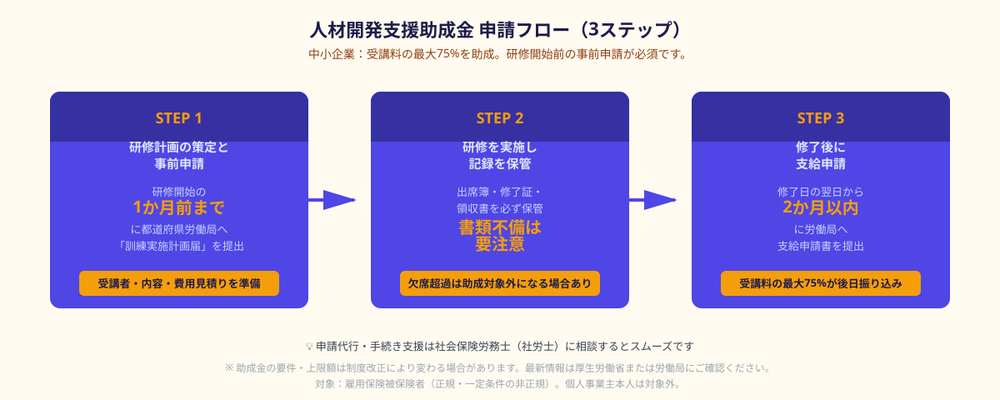

AI研修とは｜目的・対象・形式の違い
AI研修とは、ChatGPT・Claude・Geminiといった生成AIツールの操作方法や業務活用スキル、AIリテラシーを組織の従業員に習得させることを目的とした教育プログラムです。「全社員向けの基礎研修」から「特定部門向けの実践ワークショップ」まで内容・深度・費用は様々です。
AI研修が急速に広まった背景には、生成AIツールの業務導入が加速したことがあります。ツールを購入しても使いこなせなければ投資が無駄になるため、「ツール導入と研修をセットで進める」企業が2026年現在は主流です。
AI研修の目的は大きく3つに分かれます。①AIリテラシーの底上げ（全社員が基本的なAIの概念・使い方・注意点を理解する）、②業務効率化の実践スキル（メール作成・議事録・レポートなどの実業務でChatGPT等を使えるようにする）、③AI開発・データ活用の高度化（エンジニア・データサイエンティスト向けの専門スキル習得）です。
種類別の費用相場一覧（2026年版）

AI研修のコストは、形式・受講者数・研修日数によって大きく異なります。主要な5形式の費用相場と特徴をまとめます。
① eラーニング型（サブスクリプション）
Udemy Business・LinkedIn Learning・schooなど月額制の動画学習プラットフォームで、個人向けは月額3,000〜8,000円程度、法人向けの1ライセンスあたりは年間1.5〜5万円前後が相場です。自分のペースで学べる反面、内容が自社業務に合っているかは事前確認が必要です。AIリテラシーの底上げを目的とした「まず全員に使わせてみる」フェーズに向いています。
② 動画研修パッケージ（買い切り型）
自社の業種・業務に特化した研修コンテンツを一括購入する形式です。30〜100名規模で10〜30万円が相場ですが、内容の鮮度が落ちやすい点が課題です。特にChatGPT等のAIツールは機能更新が速いため、コンテンツの更新頻度を確認してから購入することを推奨します。
③ 公開セミナー・集合研修（外部参加型）
ベンダーやコンサル会社が主催する1日〜2日の公開セミナーに参加する形式で、1人あたり3〜8万円が一般的な価格帯です。少人数で参加でき初期コストが低い点がメリットですが、自社の業務フローに合わせたカスタマイズはできません。
④ 社内集合研修（講師派遣型）
専門講師を会社に招いて実施するオンサイト・オンライン研修です。社員全員で同じ内容を学べるため、共通言語が生まれやすい点が強みです。費用は半日で5〜15万円、1日で10〜30万円程度（受講者数・カスタマイズ度合いにより変動）が相場です。内容を自社業務に合わせて設計してもらえるため、実践効果が高い形式です。
⑤ コンサルティング併設型
研修後も継続的にAI活用の相談・伴走支援を受けられる形式です。研修単独より費用は高く、半年〜1年の契約で30〜100万円超になることも珍しくありません。AI導入を本格的に進めたい場合や、DX推進の旗振り役がいない場合に選択肢に入ります。
eラーニング（サブスク）：月3,000〜8,000円/人
動画パッケージ（買い切り）：10〜30万円/社（30〜100名）
公開セミナー参加：3〜8万円/人・回
社内集合研修（講師派遣）：10〜30万円/日（人数別）
コンサルティング併設：30〜100万円超（複数月）
※ 助成金適用後は中小企業の場合、上記の25%相当まで自己負担を抑えられます
助成金で費用を最大75%削減する方法

AI研修費用を大幅に削減できる代表的な公的支援が、「人材開発支援助成金（人への投資促進コース）」のデジタル人材育成支援コースです。厚生労働省が管轄し、AIを含むデジタルスキル習得のための研修が助成対象となります。
助成率と上限
中小企業：受講料の最大75%・1コースあたり上限30万円（2026年4月時点）。大企業：受講料の最大60%。eラーニング・集合研修ともに対象です。ただし、訓練時間・内容・実施方法に一定の要件があります。
申請の3ステップ
STEP 1：研修計画を策定し訓練前に申請する
研修を開始する1か月前までに、都道府県労働局またはハローワークに「訓練実施計画届」を提出します。受講者の氏名・受講内容・研修会社の概要・費用見積もりを揃えてから申請します。事前申請なしで研修を始めると助成対象外になるため、「研修先が決まったらまず申請」を順守してください。
STEP 2：研修を実施し出席・修了記録を保管する
申請が承認されたら研修を実施します。出席簿・修了証・領収書など、支給申請に必要な証拠書類を必ず保管してください。受講者が研修を中断したり欠席が一定割合を超えたりすると助成対象外になる場合があります。
STEP 3：研修修了後に支給申請を行う
研修修了日の翌日から2か月以内に「支給申請書」と証拠書類を労働局へ提出します。審査が通れば、受講料の最大75%が振り込まれます。書類の不備があると審査に時間がかかるため、提出前にチェックリストで漏れがないか確認することを推奨します。
①事前申請が必須：研修開始後の申請は受け付けられません。研修先が決まり次第、すぐに申請手続きを開始してください。
②雇用保険被保険者であること：対象は雇用保険被保険者（正規・一定条件の非正規）です。個人事業主本人は対象外です。
③外部講師へのスポット発注の場合：外部専門家に研修講師を依頼する場合も、一定条件を満たせば助成対象になります。詳細は最寄りの労働局にご確認ください。
また、AI研修に利用できる支援制度は助成金だけではありません。経済産業省の「IT導入補助金」では、AIツールの導入と合わせた研修・定着支援の費用が対象になる場合があります。複数の支援制度を組み合わせることで、企業の実質負担をさらに抑えることが可能です。
AI研修を選ぶ3つのポイント
ポイント①：研修の目的と対象者を明確にする
「ChatGPTでメールを速く書けるようにしたい（事務職全員）」と「RAGシステムの仕組みを理解させたい（ITエンジニア部門）」では、最適な研修は全く異なります。費用を比較する前に、誰に・何を・どの深さで学ばせたいかを明確にすることが最初のステップです。目的が曖昧なまま「とりあえずAI研修」を発注すると、受講者に刺さらず費用対効果が低くなります。
ポイント②：実務に即したカスタマイズができるか確認する
汎用的な研修プログラムではなく、自社の業界・業務フロー・使用ツールに合わせた内容を提供できるかを確認してください。「製造業の現場でAIをどう使うか」「士業事務所での文書作成にChatGPTをどう組み込むか」など、業種特化の内容は汎用研修より習得率と満足度が高い傾向があります。
ポイント③：研修後のフォロー体制を確認する
1〜2日の研修だけでは現場での定着はなかなか進みません。研修後のQ&A対応・個別コーチング・教材の継続利用が含まれているかを必ず確認しましょう。また、研修で扱うAIツール（ChatGPT・Claude等）は機能更新が速いため、コンテンツの更新頻度や対応可否も確認しておくことを推奨します。
ANKENでは、ChatGPT・Claude等のAI業務活用研修の講師実績があるエンジニア・コンサルタントをスポット外注でご紹介しています。1〜2日単位での依頼もお受けしており、社内の業務フローに合わせた研修内容のカスタマイズが可能です。
👉 無料で相談する（AI研修講師をスポット外注で探す）「どのAIツールを研修で扱うべきか」「助成金申請と合わせて進めたい」など、まず相談だけでも大丈夫です。
講師・研修コンテンツをスポット外注で調達する方法
AI研修の実施にあたり、「外部の専門家に講師役を単発で依頼する」という選択肢が中小企業の間で広まっています。社内にAIの使い方を教えられる人材がいない場合、正社員を採用するよりもスポット外注のほうが圧倒的にコストを抑えられます。
スポット外注でできること
①研修コンテンツの設計・作成：自社の業務フローや使用ツールに合わせたスライド・演習素材・ワークシートを作成。②研修講師としての登壇：半日〜2日の研修を実施。オンサイト・オンラインどちらにも対応。③研修後の質問対応・フォロー：チャット・定例MTGなどで社内定着を支援。これらを組み合わせて発注することも可能です。
費用の目安（スポット外注の場合）
研修コンテンツ設計のみ：10〜25万円程度。講師派遣（半日）：5〜12万円程度。フォロー込みの研修パッケージ（1〜2日＋フォロー1か月）：20〜50万円程度。一般的な研修会社のパッケージと比較して、スポット外注は内容のカスタマイズ自由度が高く、コストも交渉次第で柔軟に設定しやすいのが特徴です。
ANKENのスポット外注の流れ
ANKENでは、「AI研修講師を探したい」という相談から対応しています。①無料相談でご要件をヒアリング → ②適切なエンジニア・コンサルタントをご紹介 → ③要件確認・合意後にスポットで稼働開始。固定費ゼロ・必要な期間だけ依頼できるため、研修の頻度や予算に合わせて柔軟にご活用いただけます。
よくある質問
- Q. AI研修に使える助成金はいくらもらえますか？
- A. 人材開発支援助成金（デジタル人材育成支援コース）の場合、中小企業は受講料の最大75%・1コースあたり30万円が上限（2026年4月時点）です。ただし雇用保険被保険者が対象で、事前申請が必須です。制度の詳細は厚生労働省や最寄りの労働局でご確認ください。
- Q. 外部講師に1日だけ研修を依頼した場合も助成金は使えますか？
- A. 外部機関が実施する研修で一定の要件（訓練時間・修了証の発行など）を満たせば、スポット外注の講師による研修も助成対象になる可能性があります。申請前に労働局に要件を確認することをお勧めします。
- Q. eラーニングとリアルな集合研修、どちらが効果的ですか？
- A. 目的によって異なります。「まず全社員にAIの基本を知ってもらう」ならeラーニングが低コストで効率的です。「実際に業務で使えるようにする」なら、自社業務に合わせたワークショップ型の集合研修のほうが定着率が高い傾向があります。両方を組み合わせて、eラーニングで基礎知識 → 集合研修で実践演習、という進め方が多くの企業で採用されています。
まとめ
AI研修の費用は形式によって大きく異なりますが、全社的なリテラシー底上げにはeラーニング（月3,000円〜）、実践定着を目指すなら講師派遣型の集合研修（10〜30万円/日）が費用対効果の高い選択肢です。人材開発支援助成金を活用すれば中小企業は費用の最大75%を回収でき、実質負担を大幅に抑えられます。
AI研修で成果を出す3つの原則をまとめます。①目的と対象者を先に決める（汎用研修ではなく業務特化で選ぶ）、②助成金申請は研修開始の1か月以上前に動き出す、③研修後のフォロー体制まで含めて発注する。社内に研修を設計・講師できる人材がいない場合は、スポット外注で専門家を1〜2日単位で確保する方法もぜひ検討してみてください。